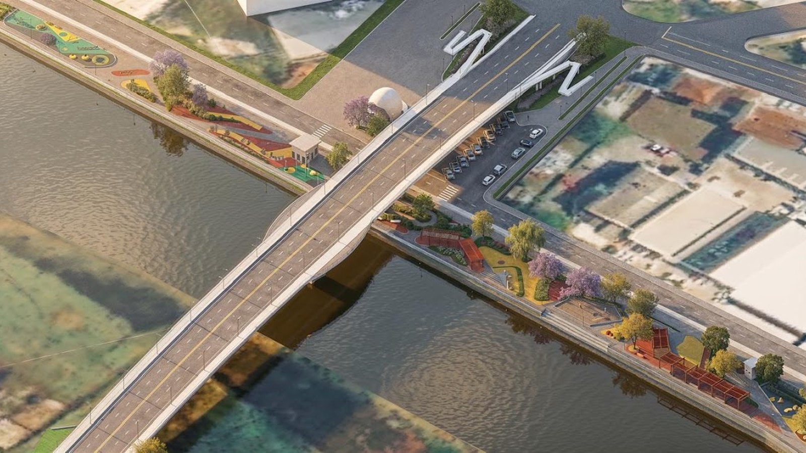

Litoral Norte · Infraestrutura
Litoral Norte · InfraestruturaNavegantes desobstrui 4 km de canais antes da chuva, com o El Niño se fortalecendo
Outra prefeitura do litoral se antecipando a um problema de água.
Hoje a cidade atravessa o rio pela ponte da BR-101 e pela Bulcão Viana. A sondagem começou na região da Praça da Concha, e a Prefeitura espera fechar o projeto até o fim do ano.
Em 30 segundos · Modo de Leitura, formato original Santa Informa
A Prefeitura de Tijucas começou os estudos iniciais de sondagem na região próxima à Praça da Concha. Eles vão servir de base para o projeto de uma nova ponte sobre o Rio Tijucas.
Hoje a cidade tem duas travessias sobre o rio: a ponte da BR-101, que é federal, e a ponte Bulcão Viana.
A sondagem serve para conhecer o solo e reunir a informação técnica que o projeto precisa.
A previsão da Prefeitura é concluir a elaboração do projeto até o fim de 2026.
Só com o projeto pronto o município vai pedir recursos ao Governo do Estado e ao Governo Federal para tocar a obra.
Não há valor, traçado definitivo nem prazo de obra divulgados.
InfraestruturaPublicada em Redação Santa Informa

Quem sai de Itapema em direção a Florianópolis pela BR-101 cruza o Rio Tijucas. Essa travessia agora tem um capítulo novo, e ele começou por baixo, no chão. A Prefeitura de Tijucas informou nesta sexta-feira, 21 de agosto, que já estão em campo os estudos iniciais de sondagem na região próxima à Praça da Concha, para subsidiar o projeto de uma nova ponte sobre o rio.
Sondagem é a etapa em que se descobre com o que se está lidando. A equipe fura o terreno em pontos escolhidos e mede o que encontra, camada por camada, para saber a resistência do solo e a profundidade em que existe apoio firme. É esse resultado que define o tipo de fundação, o tamanho dos pilares e, no fim, boa parte do preço da obra. Sem esse dado, qualquer desenho de ponte é palpite.
Pela previsão da Prefeitura, a elaboração do projeto avança nos próximos meses, com conclusão esperada até o fim do ano. Depois disso o município passa a ter, nas palavras da própria administração, condições técnicas de apresentar a demanda a quem tem dinheiro para bancar a construção.
Tijucas hoje atravessa o próprio rio por dois caminhos. Um é a ponte da BR-101, que é federal e serve principalmente a quem está de passagem, no sentido norte e sul. O outro é a ponte Bulcão Viana, que liga o centro ao outro lado da cidade. A nova estrutura é apresentada como uma terceira opção de entrada e saída, para tirar peso dessas duas e melhorar a circulação dentro do município.
A Prefeitura também posiciona o projeto como uma solução local enquanto uma obra maior, o contorno viário, ainda depende de outras etapas e de articulação com outros governos. A lógica é simples: em vez de esperar a solução grande chegar, resolver o que dá para resolver no tamanho do município.
Nada muda amanhã. Não há obra, não há máquina no rio e não há data marcada. O que existe é a primeira peça de um processo que costuma ser longo: sondagem, projeto, pedido de recurso, licitação e só então canteiro. Ainda assim, o assunto interessa a quem mora no litoral daqui, porque o Rio Tijucas é um ponto de estrangulamento conhecido no caminho entre a Costa Esmeralda e a Grande Florianópolis. Toda travessia a mais na região é uma alternativa a menos de fila na temporada.
O resumo de 30 segundos está no topo e a versão completa é o texto acima. Aqui ficam as três leituras da casa sobre o mesmo assunto.
Clara, a otimista
Gosto da ordem em que Tijucas colocou as coisas. Primeiro o estudo, depois o projeto, depois o pedido de dinheiro. É o contrário do que a gente costuma ver, que é anunciar obra e correr atrás do desenho depois.
E sondagem é barata perto de uma ponte. Gastar pouco agora para saber exatamente o que se pede depois é o tipo de decisão que economiza ano de espera lá na frente.
Seu Prudêncio, o criterioso
Merece atenção o degrau entre projeto pronto e obra paga. Ter o desenho na gaveta não garante recurso, e municípios do litoral vivem cheios de projeto bom esperando fila em Florianópolis e em Brasília. Uma sugestão útil: acompanhar o fim do ano, porque é ali que se descobre se o cronograma se sustentou.
Vale acompanhar também o resultado da sondagem em si. Margem de rio costuma dar solo mole, e solo mole muda fundação, muda prazo e muda preço. O número que sair desse furo é o que vai dizer se a conta final é a que a cidade imagina.
Dito isso, a escolha técnica está correta. Fazer a sondagem antes de desenhar, e desenhar antes de pedir, é a sequência que dá credibilidade ao pleito. Tijucas está montando um pedido que dá para defender com papel na mão, e isso coloca a cidade na frente de quem só manda ofício.
Caco, o sarcástico
Tijucas tem duas pontes e quer a terceira. Toda cidade do litoral tem uma terceira ponte no coração.
A obra começou pelo mais empolgante que existe em engenharia: furar o chão para ver o que tem lá embaixo. Vai ter foto, vai ter placa, e ninguém vai entender nada.
E o cronograma é honesto: projeto até o fim do ano, dinheiro depois, obra sabe-se lá. Pelo menos avisaram a ordem.
Fontes: Prefeitura de Tijucas, publicação de 21 de agosto de 2026 sobre o início dos estudos de sondagem para o projeto de uma nova ponte sobre o Rio Tijucas.
Litoral Norte · InfraestruturaOutra prefeitura do litoral se antecipando a um problema de água.
 Litoral Norte · Mobilidade
Litoral Norte · MobilidadeAs obras que mexem no trânsito do litoral catarinense, e em que pé está cada uma.
 Litoral · Investimento
Litoral · InvestimentoComo projeto pronto virou moeda de troca na hora de pedir dinheiro público.